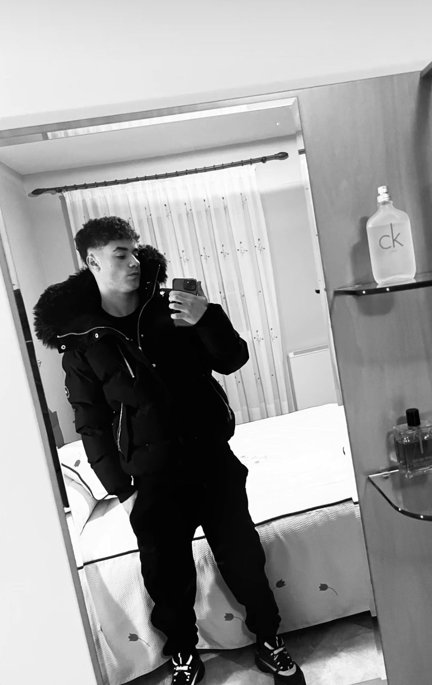

0
Días desde el ultimo baile a nuestros hijos.
Calendario
Próximo Encuentro
Rayo de Minglanilla | ...
Fuente del Recreo
Merchandising

Camiseta Oficial
Primera Equipación 2025/26

Pack Completo
Camiseta, pantalón y medias
Nuestros Patrocinadores

CACHI PUB

TIBURONES DEL PERREO

ADRIAN GARCIA DJ
Crónicas de Partidos

Diccionario del Rayo
1. Pesquerazo: Celebrar el 1-2 en el minuto 85 para acabar hundido tras el 3-0 en penaltis.
2. Pinos: Lugar donde los jugadores de La Pesquera mandan los balones. Se recomienda ir con casco.
3. Justicia: Ganar un derbi incluso cuando el árbitro ignora un gol legal.
4. "El Muro": Sensación de pánico del rival al entrar en nuestro área.
5. Escozor: Sensación térmica en el pueblo vecino al ver este contador.
6. Turista Deportivo: Jugador rival que viene por puntos y se va con goles.
7. Mudez: Fenómeno en la grada visitante tras los penaltis.
8. ADN Rayo: Remontar cuando el rival ya está celebrando.
9. Ilusionismo: Creer que vas a salir vivo de Minglanilla.
10. Retrovisor: Donde nos ven en la clasificación.
Rumores de Mercado
Iker, el 'Bellingham' del Rayo, en una encrucijada: La noche le confunde 🌃

Iker meditando su futuro (o pensando en la próxima ronda).
El culebrón del verano ha estallado en Minglanilla. Iker, nuestro Jude Bellingham particular, tiene una oferta de renovación sobre la mesa que está haciendo temblar los cimientos del club. La directiva, consciente de su valor, le ha propuesto un sueldo galáctico: dos cubatas gratis por cada gol marcado.
Sin embargo, el crack no lo tiene claro. Fuentes cercanas al jugador aseguran que "la noche le confunde" y que está sopesando si sus reflejos aguantarán semejante ritmo de primas por objetivos. El vestuario está dividido: unos le piden que firme ya para aprovechar las rondas, y otros temen que acabe jugando con visión doble.
¿Se quedará por el amor al arte... o por el amor al combinado? ¡Minglanilla entera contiene el aliento! 🥃🥃
N'Golo Kanté: En negociaciones
Visto en el bar del pueblo pidiendo unas bravas y una mediana. Los rumores dicen que le gusta el clima de Minglanilla.